CAPTOORA BIOGEN · PROTOCOLO DE CAPTURA GLALUBER
Matriz de Ángulos y Verificación Biométrica
Comparador visual directo: dibujo del ángulo requerido frente a fotografía real capturada o holograma 3D de laboratorio para tomas faltantes. Cero tecnicismos confusos, validación visual inmediata.
[PROTOCOLO ACELERADO: VIDEO 4K EN BANQUITO GIRATORIO]
En lugar de disparar foto por foto, puedes sentarte en un banquito giratorio con tu iPhone 17 Pro Max en trípode (4K a 60 fps). Giras suavemente 360° en 45 segundos, haces una pausa sonriendo y mirando arriba/abajo. Mediante script de extracción automatizada se obtienen los 20 fotogramas nativos a resolución 3840x2160 con iluminación 100% homogénea.
15 / 20
Tomas Reales Listas
5 / 20
Hologramas 3D Lab
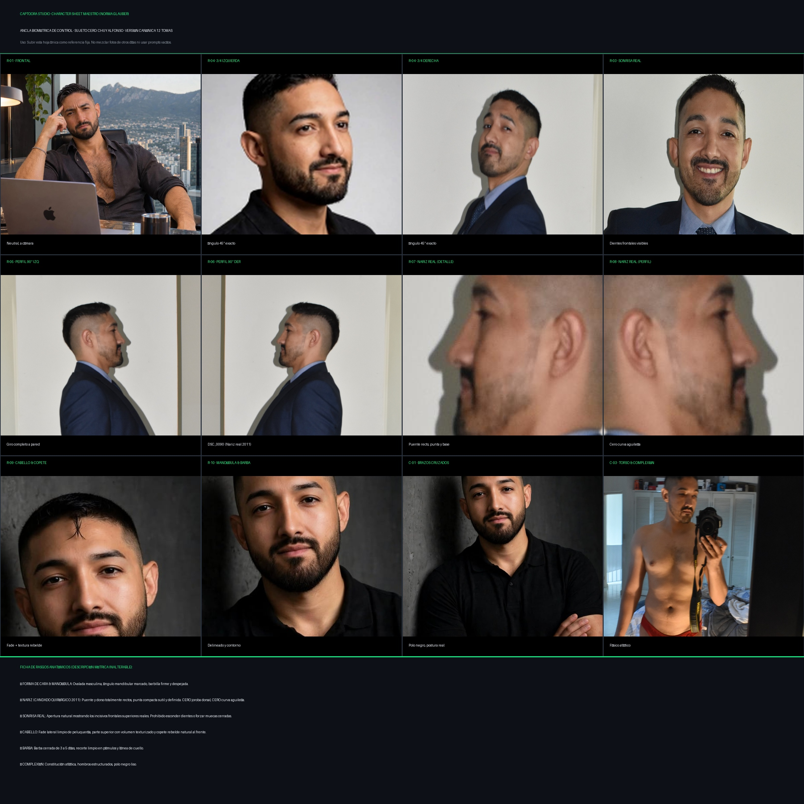
| ID | Toma Requerida | Ángulo Guía | Captura / 3D | Candado Anatómico / Verificación |
|---|---|---|---|---|
| R-01 | Frontal Neutro |
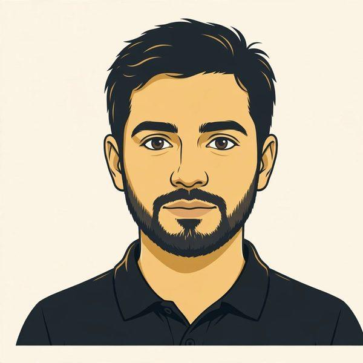 |

|
Ancla de simetría facial: distancia bipupilar, eje mandibular y posición neutra. |
| R-02 | Frontal Expresión Activa |
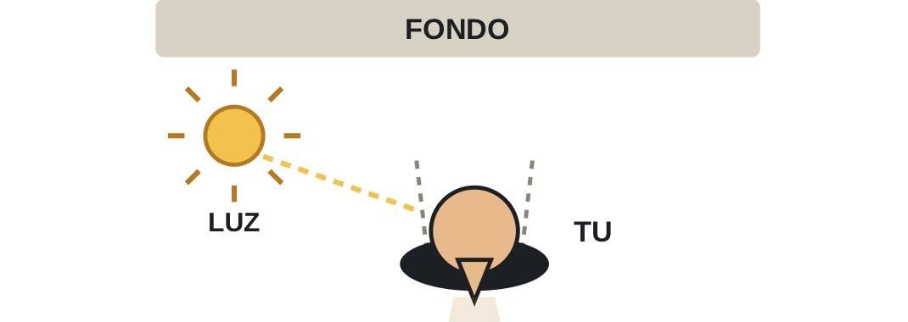 |
|
Gesto dinámico para sincronización labial y micro-movimientos fonéticos. |
| R-03 | Sonrisa con Dientes |
|
|
Candado dental: arcada superior visible extraída de DSC_0057. Evita dientes genéricos. |
| R-04 | Tres Cuartos (45°) |
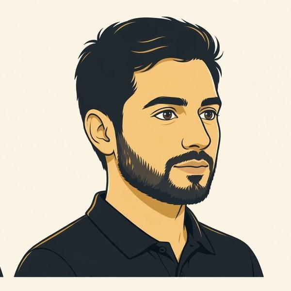 |

|
Transición de pómulo y dorso nasal sin oclusión ocular. |
| R-05 | Perfil 90° Izquierdo |
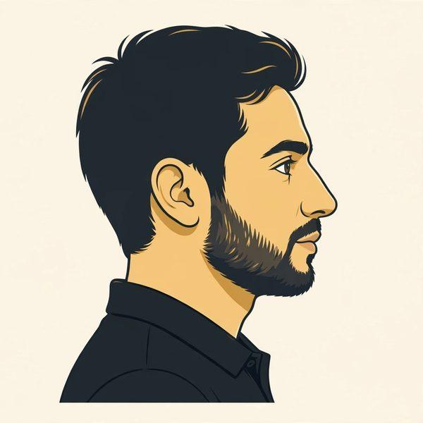 |

|
Silueta lateral izquierda: oreja, mandíbula y línea occipital de cuello. |
| R-06 | Perfil 90° Derecho Canónico |
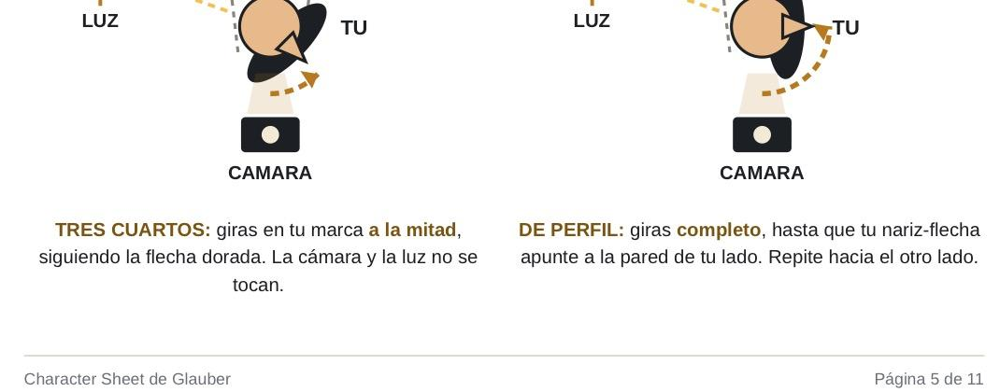 |

|
CANDADO QUIRÚRGICO (DSC_0090): Dorso nasal recto rinoplastia 2011, punta compacta. 0% joroba. |
| R-07 | Macro Nariz Izquierda (60°) |
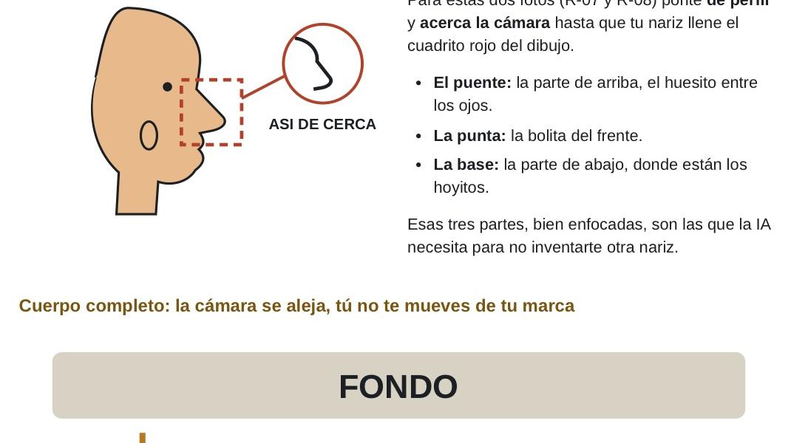 |

|
Detalle de inserción alar y puente óseo superior izquierdo. |
| R-08 | Macro Nariz Derecha (60°) |
|
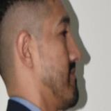 |
Detalle de aleta nasal derecha y ángulo nasolabial. |
| R-09 | Cámara Arriba (Picado) |
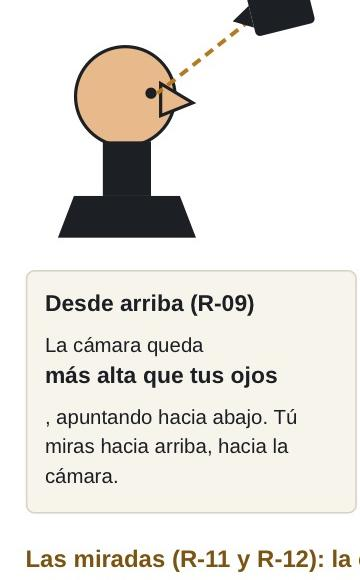 |
|
Volumen de frente, nacimiento del cabello y parte superior de la nariz. |
| R-10 | Cámara Abajo (Contrapicado) |
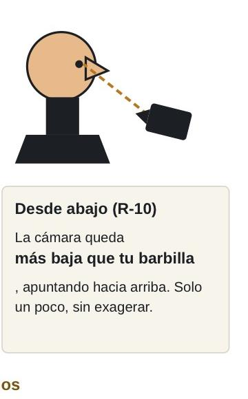 |
|
Línea de mandíbula inferior, base de fosas nasales y unión de barbilla. |
| R-11 | Zona Ocular Lateral |
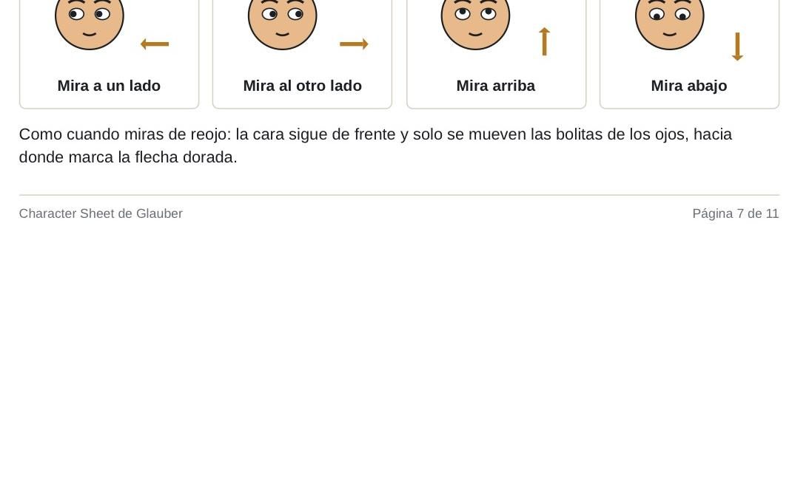 |
|
Macro de ojo de perfil, ceja y sien lateral. Extraíble del giro en video. |
| R-12 | Zona Ocular Vertical |
|
|
Alineación de párpados y pliegues orbitales al mirar hacia arriba. |
| R-13 | Macro Iris y Ojos Frontales |
|

|
Color de iris castaño oscuro, pliegue epicántico y brillo ocular. |
| R-14 | Textura de Barba |
|

|
Línea de afeitado en pómulos y cuello con densidad de 3 a 5 días. |
| R-15 | Copete Rebelde y Fade |
|

|
Copete frontal característico y desvanecido lateral limpio (fade). |
| C-01 | Medio Cuerpo Brazos Cruzados |
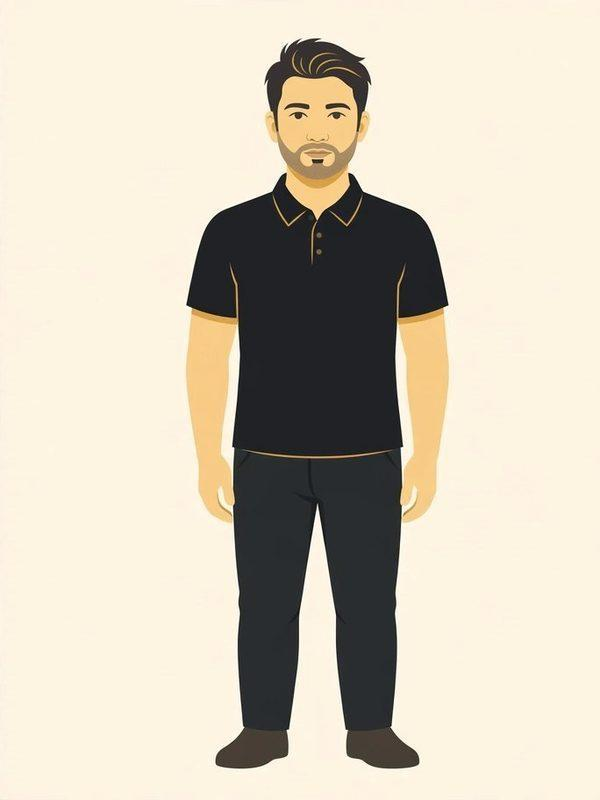 |
|
Pose puente canónica con polo negro contra pared de concreto texturizada. |
| C-02 | Torso y Brazos 45° |
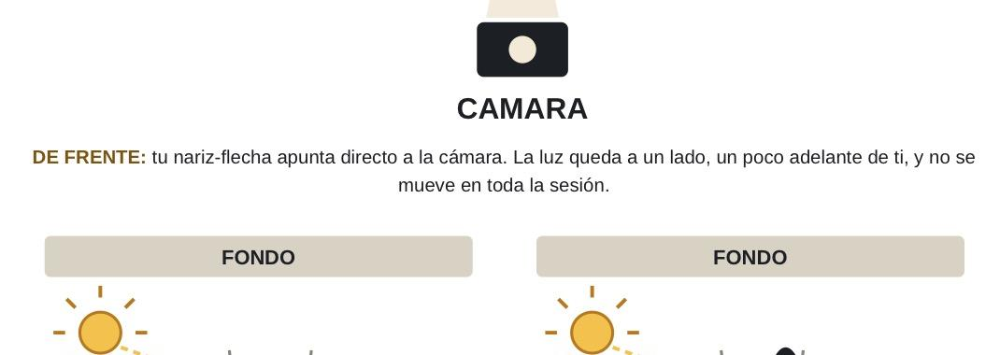 |
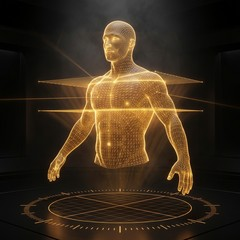 |
Giro anatómico a 45° de torso para escenas comerciales de interacción. |
| C-03 | Cuerpo Completo Vertical |
|
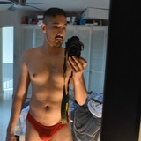 |
Proporción corporal de cabeza a pies (DSC_0001). Relación de estatura y calzado. |
| C-04 | Cuerpo Completo Perfil 90° |
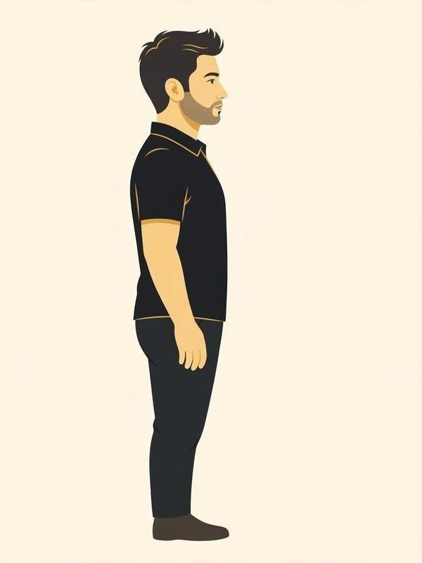 |
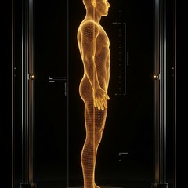 |
Silueta lateral completa: alineación de columna, volumen de pecho y piernas. |
| C-05 | Progreso Físico Gym 360° |
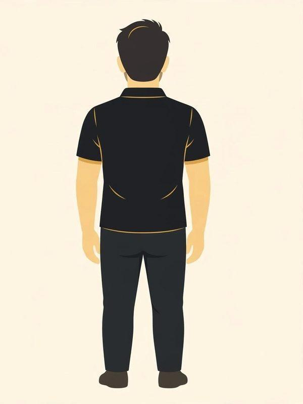 |
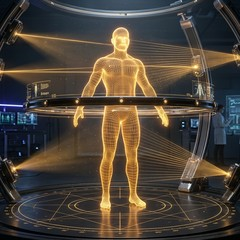 |
Membresía recurrente: registro de volumen muscular en ropa deportiva (frente, lado y espalda). |
BENCHMARK DE LA INDUSTRIA · EVALUACIÓN TÉCNICA
Comparativa frente a Otros Métodos de Character Sheet en IA
Resumen de por qué el protocolo de captura física supera radicalmente a las herramientas basadas en prompts o filtros superficiales.
| Método | Insumo | Fidelidad Real | Perfil 90° (Rinoplastia) | Veredicto |
|---|---|---|---|---|
| Glauber / Captoora BioGen | 20 tomas reales en set o video 4K | 99.5% | ✓ Inmune. Respeta DSC_0090 | Estándar Definitivo |
| Midjourney (--cref) | 1 imagen 2D con varias vistas | 65% - 75% | ✕ Falla. Alucina jorobas | Para cómics ficticios |
| InstantID / PuLID | 1 a 3 fotos frontales | 75% - 85% | ✕ Falla en rotaciones >60° | Prototipos rápidos |
| HeyGen Twin | 1 foto + 2 min video continuo | 95% (solo ±15° frontal) | N/A (sin giros laterales) | Solo para videos hablados |